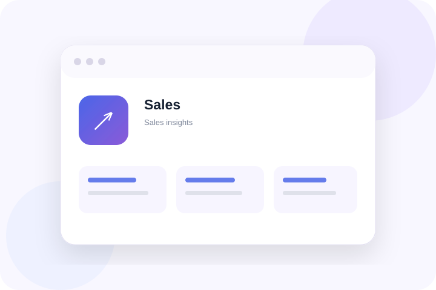
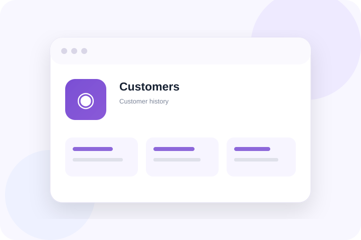
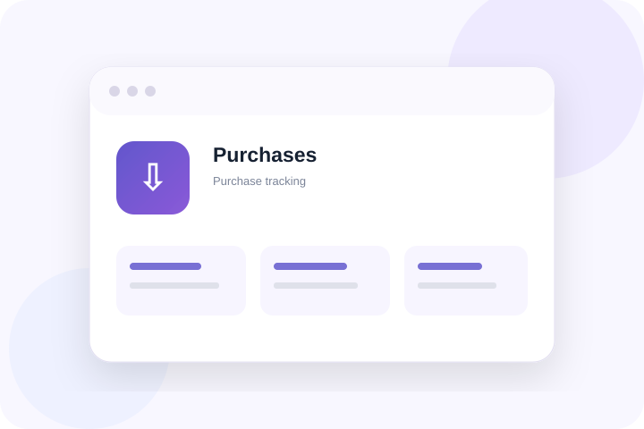
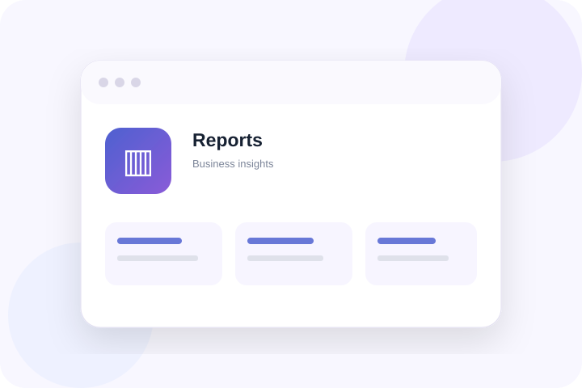

Everyday operations, organised in one place.
From the first bill to the end-of-day report, Puravigal POS connects the workflows a small business depends on.

Move from product search to a completed bill, without the clutter.
Keep the counter focused. Find products quickly, add quantities, choose a payment method and complete the sale in a workflow your team can learn fast.
- Fast product search and barcode-ready workflow
- Multiple payment methods
- Customer details on the bill
- Print or share the completed invoice
Know what is in stock, what is moving, and what needs attention.
Keep your product catalogue and stock information connected to sales and purchases, so inventory is not another spreadsheet to maintain.
- Stock balances and low-stock visibility
- Purchase-to-stock workflow
- Stock adjustments and movement
- Product-level information in one place
Turn daily transactions into information you can actually use.
See how the business is performing without manually combining bills, payments and spreadsheets at the end of the day.
- Daily and period sales views
- Payment-method visibility
- Recent transaction history
- Sales trends and business summaries


Keep customer history where the sale happens.
Customer information should be useful, not just stored. Connect bills, balances and purchase history to the customer record.
- Customer profiles
- Purchase history
- Outstanding balances
- Customer information on invoices
Bring purchasing into the same system as selling.
Record what you buy, from whom you buy it, and how it affects your stock. Keep supplier balances and purchase information together.
- Purchase entries
- Supplier records
- Received-stock workflow
- Supplier balances and history


Understand the business after the counter closes.
Bring sales, payments, inventory and operational information together so owners can make decisions with a clearer picture.
- Sales summaries
- Payment insights
- Inventory visibility
- Operational reporting direction
The details that make the daily workflow complete.
See how the product fits your business.
Choose your business type or start with the core POS.
Frequently asked questions
Clear answers to common questions about choosing and using POS software.
What features should small-business POS software include?
Most businesses should assess billing, product records, inventory, purchases, customer information, sales reports, returns and the hardware used at the counter.
Why should billing and inventory work together?
When sales and stock records are connected, teams can reduce duplicate entry and owners can review product movement more consistently.
Can I share or print POS invoices?
The Puravigal POS feature page describes invoice sharing and receipt-printing workflows. Confirm compatibility with your specific devices and current release before relying on a setup.
How can I decide which POS features I need?
Map the tasks your staff perform every day, identify the reports the owner needs, and prioritise features that remove manual work rather than adding complexity.